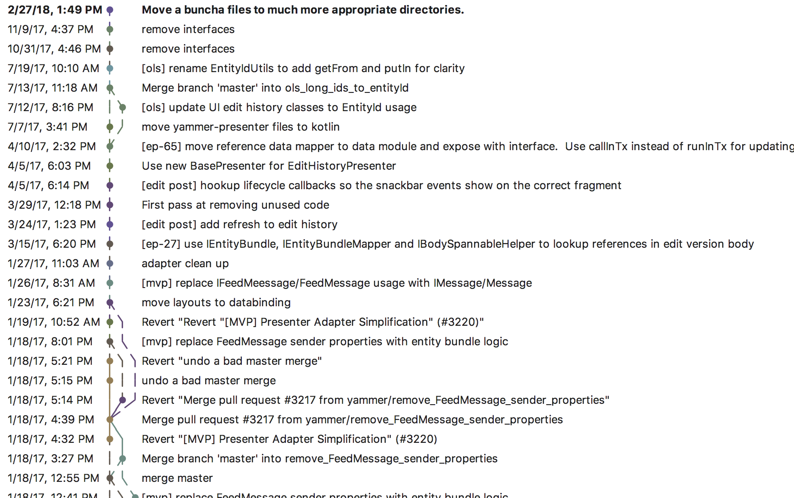

Kotlin, Practically Speaking
Who am I?
Andrew Watson
Senior Android developer @ Microsoft - Yammer team
üê£: @creativedrewy
Who are you?
What I'm going to talk about
We've been using Kotlin for 1½ years, and it's great!
- The path we took to get started
- Practical lessons we've learned along the way
- Particularly re: migrating and converting an existing codebase
Getting the party started at Yammer
May, 2017
- Personally I had been using "not-official" Kotlin since 2015
- I/O 2017: Google FTW!
- Our team was understandably mixed
Taking our time
- Didn't make anyone do Kotlin right away
- Book club for 6 months
- "Kotlin in Action" by Jemerov and Isakova
- We didn't outright block the usage of it though
Our next steps
- Wrote a draft of Kotlin coding standards
- Converting unit/Espresso tests was good practice
- Eventually: all new code to be written in Kotlin
A word on buy-in from higher-ups
- Thankfully we had the freedom to do this
- I can tell you intuitively things are better
- Official metrics would be very nice
- Maybe this talk could help you get buy in!
Things we've learned
Lesson:
The auto-converter leaves work for you to do ü§∑‚Äç
An example:
The initial conversion
We can do better
A word about Companion Objects
Converted:
Consumed in Java:
The right way:
New consumption:
Lesson:
Kotlin conversion will wipe all Git history üôÄ
A beautiful history...
Gone in an instant!
This is actually due to the way Git works
Not the auto-converter's fault
So how do we actually do this?
- Do an initial auto Kotlin conversion
- Clean up all the auto convert issues
- Copy the converted contents to a scratch file
- Revert your changes
- Rename **just** the file name to *.kt
- Commit! Your build is mega broken.
- Paste in your converted Kotlin code
- Commit a 2nd time. Now you are converted!
Plz don't squash!

Lesson:
Your custom lint rules don't apply here
(But probably need reviewing anyway)
Goodbye JavaScanner, hello UastScanner
Just kidding: Detector(), SourceCodeScanner
Dev Summit Talk: https://youtu.be/ffH-LD5uP4s
Lesson:
No really, don't use !!
- Don't follow the auto-converter's example
- With rare exeception, if you're using !!, you're doing it wrong
- Short-circuits Kotlin's nullability features
- Our PR rule: If there's a !!, explain yourself!
Lesson:
Your Kotlin files can share a üè° with your Java files
- Initially we created two src dirs - java/ and kotlin/
- Made conversion painful - had to recreate directory structures
- After a while, we were totally comfortable with .java and .kt side-by-side
Lesson:
Some files just can't be converted
- The older the file, the more likely you can't convert
- Base classes (protected fields, getters/setters, etc)
- Assumptions about nullability and/or using null as data "state"
Lesson:
Death to Utils! Death to Helpers!
Long live Extensions!
Organize by class type

Oh and functions too. Just, functions.
Lesson:
Evolve your coding standards
- Usage of "it"
- Declaring type when we really didn't need to